Now I love Daft Punk, I've been a huge fan of them since I was a little kid. I loved robots, I loved Iron Man, anything with robots I loved, so two people making electric music dressed as robots was down my alley.
I can go on and fanboy over every little thing they did and my favorite songs and their contributions to music and media, but to show my love in a physical aspect besides buying the Fortnite skins and owning vinyls/CDs and posters and merch, making the helmet that they wear would be COOL – I CAN BE DAFT PUNK.
Some big inspirations were:
A smart person would've measured how big their head is to get perfect and good proportions.
I, on the other hand, didn't and just opened Blender and took 3 references, placed them in the X, Y, Z points and basically modeled it from there.
It's the easiest way. After that I opened the sculpting tab/section, smoothed out some parts and auto-smoothed it, boom. Again, a smart person would've designed it in parts. I didn't do that, but I had the whole helmet completed (digitally).
BTW this was before I knew how to use a 3D printer properly and I only had an Elegoo Neptune 3, so already off to an interesting start. In the slicer I got my full model head and rotated it in parts and made it so that the build plate would cut off certain parts (basically slicing it into chunks). THIS COULD'VE BEEN PREVENTED IF I MADE IT IN PARTS.
ALSO INFILL: ANYTHING ABOVE MAYBE 10 PERCENT IS OVERKILL, AND THE INFILL PATTERN HELPS, SO DON'T USE THE DEFAULT FOR A HUGE PROJECT LIKE THAT. USING A BETTER PATTERN AND LOWER INFILL PREVENTS OVERUSING MATERIAL and maybe is a tad faster.
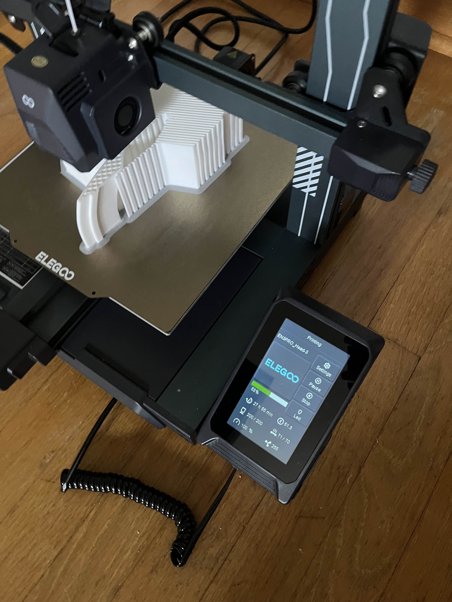I remember having to wait for days, like 5 days, for one single side because I was an idiot and didn't think about it. So remember that, kids.
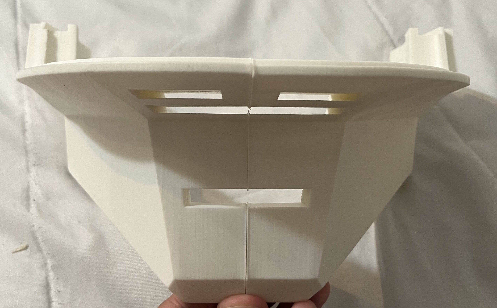 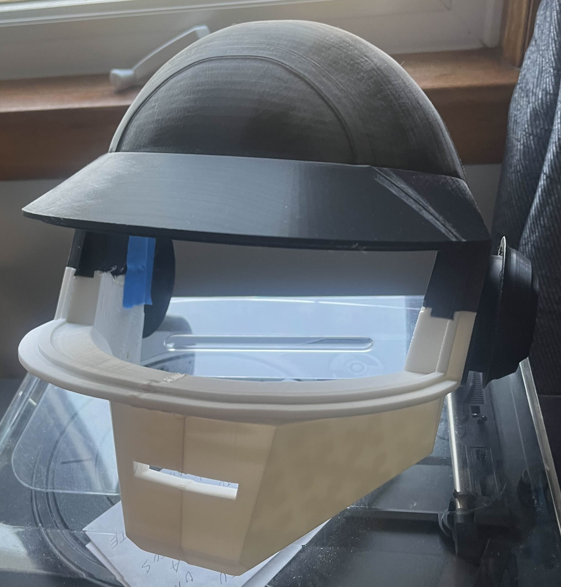Anyway, sandpaper and filler, typical stuff any random YouTube video can teach you. Start with rough lower number grit, then move into higher smoother paper until you feel that the original printer layer lines are gone. Don't overdo it or else you will get it uneven. While doing this process I used wood filler to make it “one piece.”
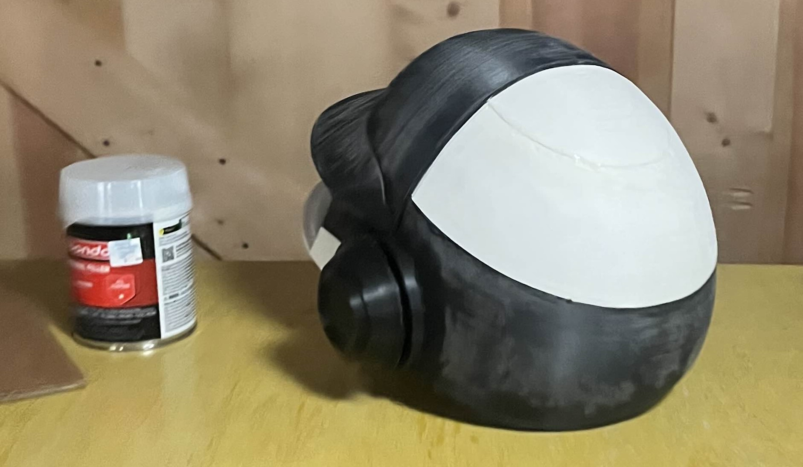Something that's important too is the temperature of where you're storing it, and also location. Don't leave it outside on a skinny stool (mine fell twice). If it gets really cold or the temperature keeps changing, it has a chance to maybe crack. Mine did… it warped and cracked and I had to use clamps (granted I started this in late 2024 and didn’t finish it until late 2025 (the day of Halloween)), so that’s another thing – finish projects when you can.
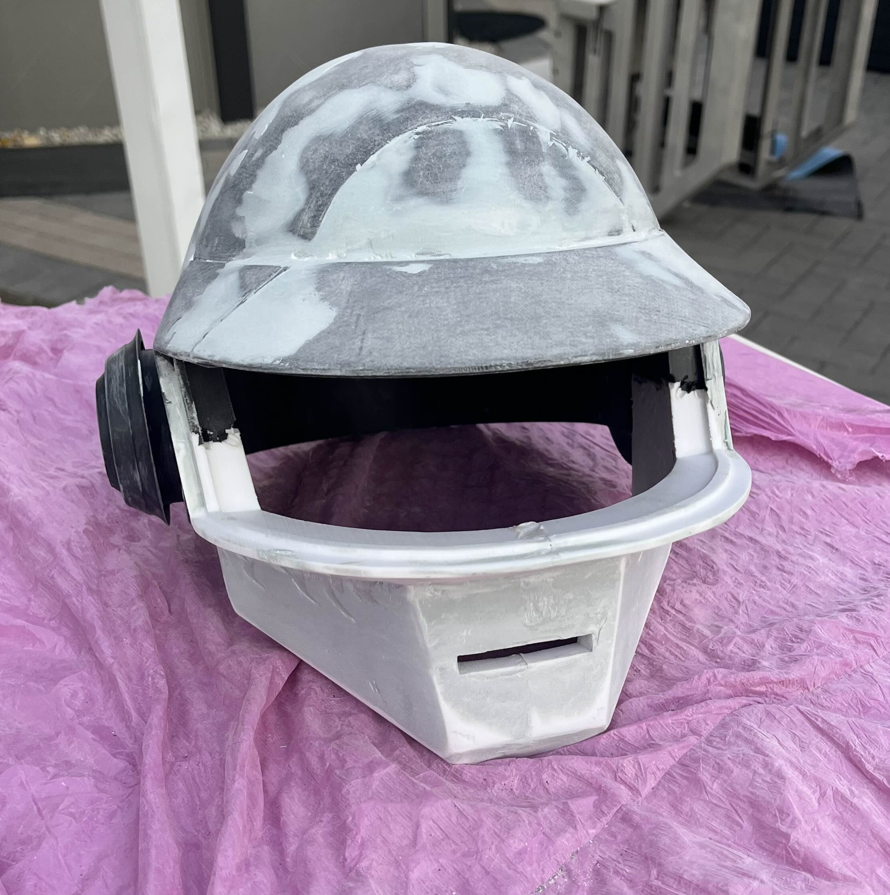 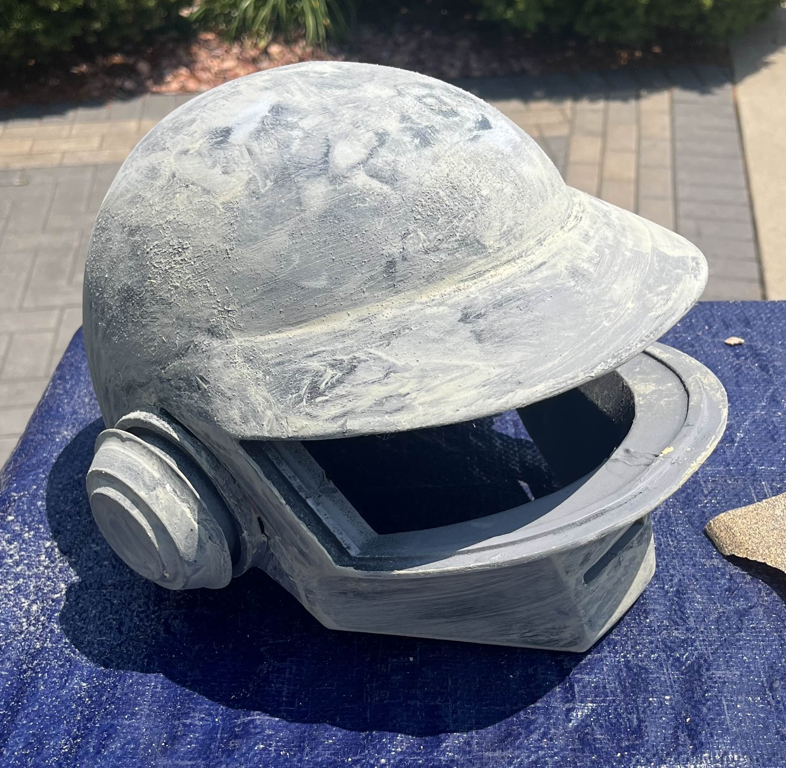Technically the longest part and the reason why I finished it late was it cracking and me waiting for it to be perfect. The paint was something I really wanted to be right, so my dumbass used white paint then black (non-glossy) and that didn’t work with the silver mirror finish paint that’s FOR GLASS, so I was completely lost and it didn’t give a real mirror finish. I was pissed, it was expensive. (MAKE SURE to spray this stuff in a well-vented area or outside and maybe get a rotating plate, because going around a square table is a tad harder than rotating a plate.)
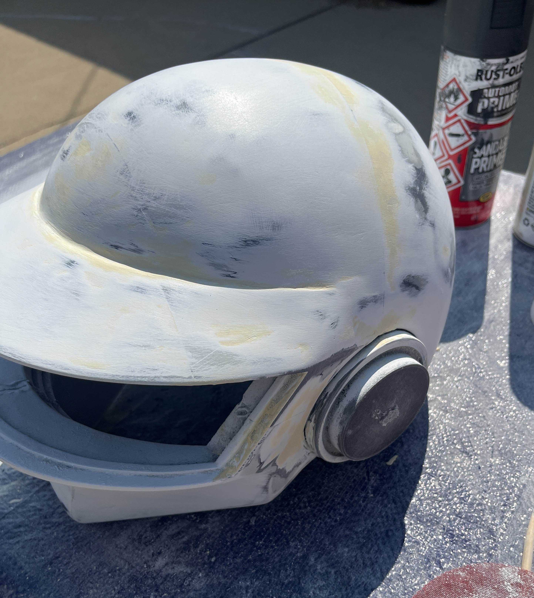 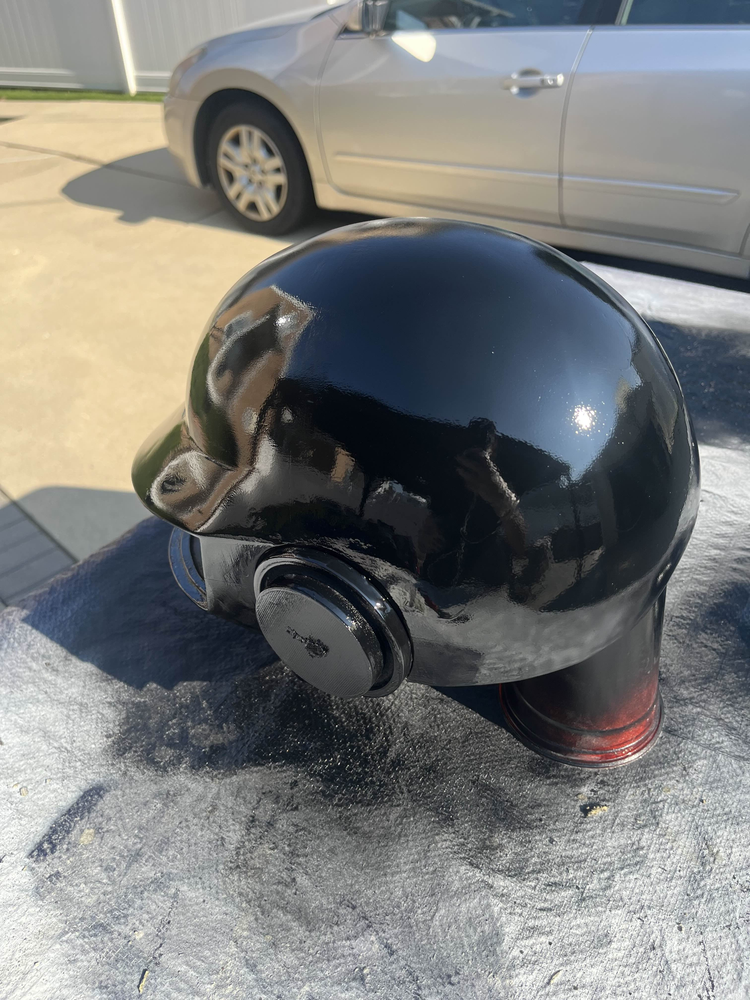I put a couple layers of everything, so like 3 layers of white, 5 layers of black glossy this time. I KNOW IT'S PROBABLY A WASTE BUT THIS IS MY FIRST REAL COSPLAY WITH COLOUR SOO IT WAS A LEARNING EXPERIENCE. Spray paint also isn’t supposed to be fast, it’s supposed to be slow, and don’t get impatient because you’ll leave globs, especially when the can is getting empty. I sprayed the silver finish and got these ugly colours on it and I’m disappointed…
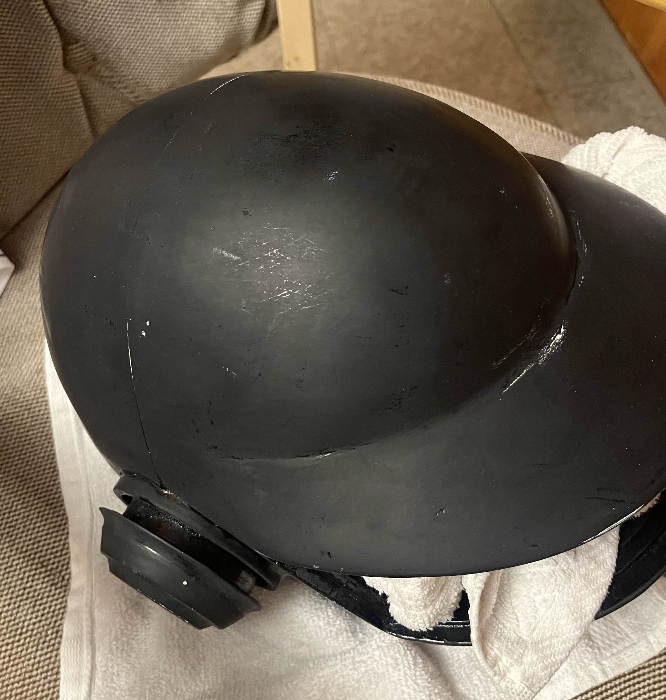 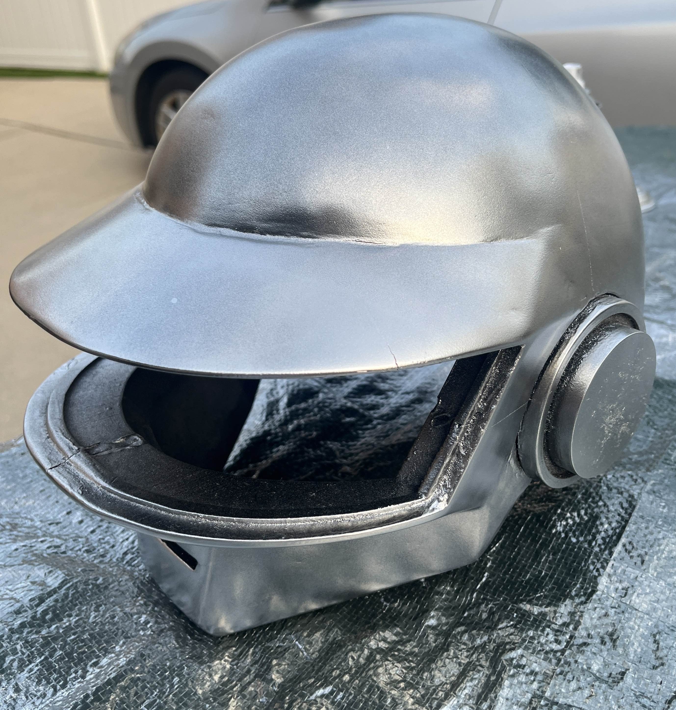I bought these welding mask replacements and cut that. To prepare for that I got some paper and taped it to the front empty part of the helmet, “traced it over” the helmet so that the darkened outline of it would be the area I needed to cut. So I cut this welding mask with some middle school scissors. GET PROPER TOOLS PLEASE CAUSE THIS WASN’T FUN.
Anyway, the electronics only needed an Arduino Nano and the typical RGB light strip, and I put some of my old code of a “snake” where it just moves around and that’s all. A question you might be asking is: how did you power it? I used my phone’s USB to send power while I was wearing it at work (yes, I worked on Halloween and wore it, temporary), but in my future design I’m going to get a proper battery system.
i know its spotty and weird but its a good first attempt and Ive definitely learned a lot from this project.
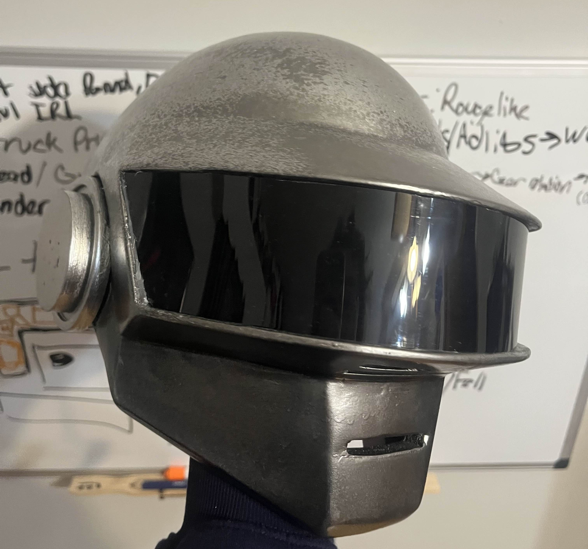
{kind=link}